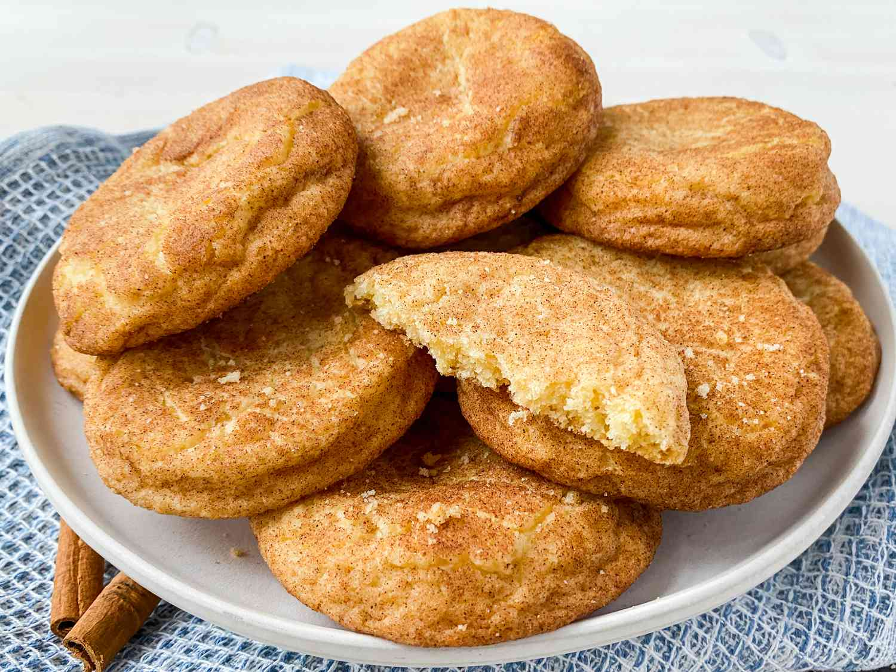

Snickerdoodle Cookies

Ingredients
- 1 cup unsalted butter, softened
- 1 1/2 cups granulated sugar
- 2 large eggs
- 2 3/4 cups all-purpose flour
- 2 teaspoons cream of tartar
- 1 teaspoon baking soda
- 1/4 teaspoon salt
- 3 tablespoons granulated sugar
- 1 tablespoon ground cinnamon
Instructions
- Preheat oven to 350°F (175°C). Line baking sheets with parchment paper.
- In a large mixing bowl, cream together softened butter and 1 1/2 cups granulated sugar until light and fluffy.
- Beat in eggs one at a time until well combined.
- In a separate bowl, whisk together flour, cream of tartar, baking soda, and salt. Gradually add dry ingredients to the creamed mixture and mix until dough forms.
- In a small bowl, combine 3 tablespoons granulated sugar and ground cinnamon.
- Shape dough into balls and roll them in the cinnamon-sugar mixture to coat evenly.
- Place dough balls on prepared baking sheets, spacing them apart.
- Bake for 8 to 10 minutes, or until cookies are set and edges are lightly golden.
- Remove from oven and let cool on baking sheets for 5 minutes, then transfer to wire racks to cool completely.
- Enjoy your delicious homemade snickerdoodle cookies!